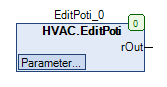

EditPoti (FB)¶
FUNCTION_BLOCK EditPoti
Kurzbeschreibung¶
Sollwertgeber mit flankengesteuerter Erhöhung / Reduktion des Sollwerts.Die Schrittweite und die absoluten Minimal-/Maximalgrenzwerte sind einstellbar.Typische Anwendung: Individuelle Anpassung einer Basistemperatur.
Darstellung¶

Schnittstellen¶
Ausgänge¶
Name Datentyp Wertebereich Initialwert Funktion rOut REAL Analog - Ausgang
Sollwerte / Parameter¶
Name Datentyp Wertebereich Initialwert Funktion xButtonUp BOOL FALSE Erhöhung des Sollwerts xButtonDown BOOL FALSE Reduktion des Sollwerts rJumpValue REAL > 0 0.2 Schrittweite rSetPointMin REAL -3.0 Absoluter Minimalwert rSetPointMax REAL 3.0 Absoluter Maximalwert
Funktionsbeschreibung¶
Allgemeines¶
Dieser Funktionsbaustein dient zur Erzeugung eines Sollwertes am Ausgang rOut.
Jede ansteigende Flanke am Sollwert / Parameter xButtonUp erhöht den Ausgang rOut um die Schrittweite rJumpValue.
Jede ansteigende Flanke am Sollwert / Parameter xButtonDown reduziert den Ausgang rOut um die Schrittweite rJumpValue.
Der Ausgang rOut ist auf einen Wertebereich zwischen dem absoluten Minimalwert rSetPointMin und dem absoluten Maximalwert rSetPointMax begrenzt.
Einstellung der Schrittweite rJumpValue
Die Schrittweite rJumpValue darf nur Werte größer als 0 annehmen.
Werte kleiner 0 werden automatisch auf 0 zurück gesetzt.
Einstellung des Wertebreichs rSetPointMin und rSetPointMax
Es gilt: rSetPointMin <= rSetPointMax
Es gilt: rSetPointMin = rSetPointMax = rOut
Wird eine Eingabe gemacht, bei der obere Regeln nicht beachtet werden, so wird automatisch rSetPointMin = rSetPointMax gesetzt.
Visualisierung¶
Codesys¶
- InOut:
Scope Name Type Initial Comment Input rSetPointMax REAL 3.0 Absoluter Maximalwert rSetPointMin REAL -3.0 Absoluter Minimalwert rJumpValue REAL 0.2 Schrittweite xButtonDown BOOL FALSE Reduktion des Sollwerts xButtonUp BOOL FALSE Erhöhung des Sollwerts Output rOut REAL Analog - Ausgang